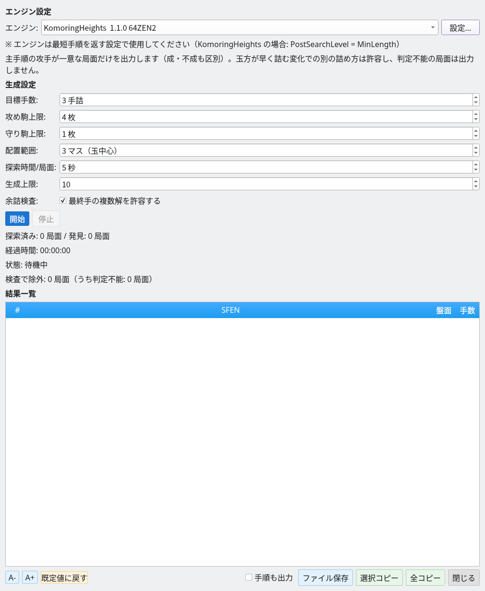
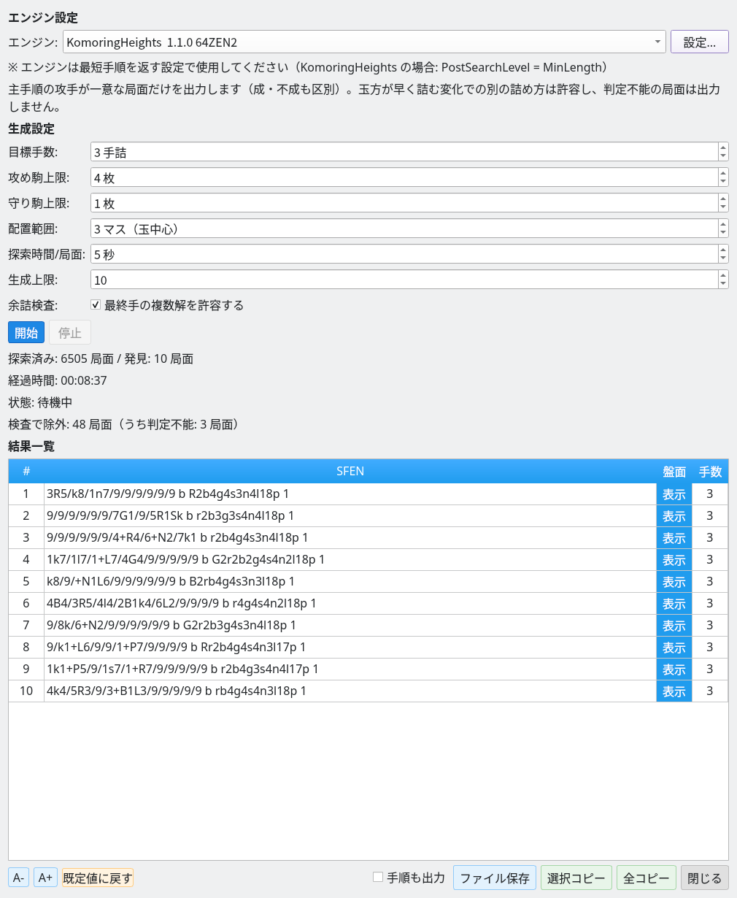
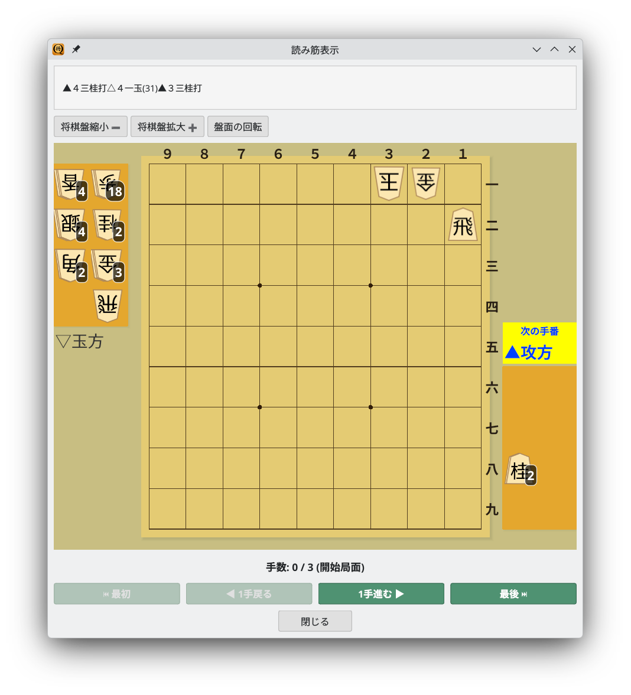

ランダム局面生成とUSIエンジンによる詰み検証で詰将棋を自動生成
ランダムに詰将棋の候補局面を生成し、USIエンジンで詰みを検証します
詰将棋局面生成機能は、以下の処理を自動で行います。
詰み探索には、komori-n氏が開発・公開している詰将棋エンジンKomoringHeightsを利用できます。エンジンを別途用意してShogiBoardQに登録し、生成ダイアログの「エンジン設定」で選択してください。配布物やソースコードは、リンク先のリポジトリで公開されています。
生成ダイアログで各種パラメータを設定して局面生成を開始します
メニューの「対局」→「詰将棋局面生成…」からダイアログを開きます。以下の項目を設定できます。

詰将棋局面生成ダイアログ：エンジン・生成パラメータを設定して「開始」で生成開始
局面生成は以下の手順で自動的に行われます。
生成された局面はまず内蔵の詰み探索で選別され、目標手数で詰まないと分かった局面や、複数の詰む初手が見つかった局面を除外します。標準実装では、内蔵探索で判定できなかった候補もUSIエンジンに送信します。エンジンが指定手数の詰みを確認した局面だけが余詰検査に進みます。「探索済み」には内蔵探索で除外した局面も含まれます。
発見された詰将棋局面が一覧表示されます
指定手数の詰みが発見されると、不要駒トリミング処理が行われた後、結果一覧に追加されます。目標手数の詰みと主手順の一意性を保ったまま除去できる駒を取り除き、最終局面の全ての1枚除去について判定が完了した問題だけを出力します。
結果一覧では以下の操作が行えます。

生成結果：10局面の3手詰を発見（探索済み3877局面、経過時間00:00:20、検査で除外18局面）
不要駒トリミングは、ランダム生成された局面に含まれる「飾り駒」（取り除いても詰み手順に影響しない駒）を自動的に除去する処理です。
ここで確認するのは「駒を1枚取り除いても同じ条件の詰将棋が成立するか」です。複数枚を同時に除去したり配置自体を変えたりした場合まで含めた、最少の駒数を保証するものではありません。
生成された詰将棋の手順を読み筋表示ウィンドウで確認できます
結果一覧の「盤面」ボタンをクリックすると、読み筋表示ウィンドウが開きます。詰み手順を将棋盤上で1手ずつ再生して確認できます。「1手進む」「1手戻る」ボタンで手順を前後に移動できます。

読み筋表示：生成された3手詰の局面を盤面上で確認（手数 0/3）
generate-tsumeの準備から、Pythonによる並列実行・保存・再検証まで
generate-tsume はGUIと共通の生成処理を使い、指定手数の詰み・主手順の余詰・不要駒を検査した局面をJSON Linesで出力します。PythonからCLIを子プロセスとして直接起動でき、MCPサーバーの起動は不要です。
以下はLinuxのシェルとPython 3を使う例です。リポジトリのルートで実行してください。ソースからの準備は Linuxでのビルド手順 を参照してください。WindowsなどではCLIの実行ファイル名・パスを環境に合わせて変更します。
cmake -B build -S . -DCMAKE_BUILD_TYPE=Release
cmake --build build --target shogiboardq-cli --parallel 4
./build/shogiboardq-cli list-engines先に 設定メニューのエンジン設定 で、go mate に対応したエンジンを登録します。--engine には実行ファイルのパスではなく、list-engines が返す登録名を指定します。下の名前は例なので、空白も含めて実際の登録名に置き換えてください。
KomoringHeightsを使う場合は、並列実行の開始設定として Threads=1、USI_Hash=256、PostSearchLevel=MinLength、GenerateAllLegalMoves=true をエンジン設定で指定できます。対応するオプション名と値は利用するエンジンで確認してください。
まず3手詰を最大10題生成して、エンジン設定と出力を確認します。標準出力のJSON Linesは、手順付き問題集のテキストとは別の形式です。
./build/shogiboardq-cli generate-tsume \
--engine 'KomoringHeights 1.1.0 64ZEN2' \
--target-moves 3 --max-positions 10 \
--timeout-ms 5000 --max-attack 4 --max-defend 1 \
--attack-range 3 --stdin-control > tsume-batch.jsonl| オプション | 意味・指定範囲 |
|---|---|
--target-moves | 目標手数。1～19の奇数。既定値は3 |
--max-positions | 1回の起動で生成する上限。1～100。既定値は10 |
--timeout-ms | 候補探索・駒除去・余詰検査に使う時間予算。500～60000ms。既定値は5000 |
--max-attack | 攻方の盤上・持駒の合計上限。1～10。既定値は4 |
--max-defend | 玉以外の玉方盤上駒の上限。0～10。既定値は1 |
--attack-range | 玉を中心とする攻め駒の配置範囲。1～8マス。既定値は3 |
--stdin-control | 標準入力の stop 行、またはEOFで停止 |
--no-final-alternatives | 最終手の複数解も不採択にする。省略時は最終手の複数解を許容 |
--no-remaining-to-hand | 未使用駒を玉方持駒へ回さない。通常の詰将棋では省略する |
started は設定、progress は生成・発見・除外・判定不能の件数、position は採択された局面、finished は終了を表します。保存する局面と手順は position.sfen と position.pv（USI指し手の配列）から取り出します。error とプロセスの終了コードも確認します。
{"event":"position","sfen":"9/8k/7P1/9/7R1/9/9/9/9 b r2b4g4s4n4l17p 1","pv":["2c2b+","1b1c","2e2c+"]}--stdin-control を付けた場合は、端末で stop と入力してEnterを押すと停止します。標準入力を閉じても停止するため、Pythonでは stdin=PIPE を開いたまま保持します。入力を最初から閉じる実行環境では、生成がすぐに終了することがあります。
以下を generate_tsume_parallel.py として保存し、リポジトリのルートで python3 generate_tsume_parallel.py を実行します。追加のPythonパッケージは不要です。最初は TARGET=10・WORKERS=1 で確認し、CPU・メモリに余裕があれば並列数を増やしてください。
PLIES は手数、TARGET は全ワーカー合計の収集目標、WORKERS は同時起動数です。TIMEOUT_MS・駒数・配置範囲も冒頭で変更できます。100題を超える場合も、各バッチの上限を100以下にして不足分を繰り返し収集します。
import asyncio
import json
import os
from pathlib import Path
CLI = str(Path("build/shogiboardq-cli").resolve())
ENGINE = "KomoringHeights 1.1.0 64ZEN2" # Use the exact name from list-engines
PLIES = 3
TARGET = 100
WORKERS = 4
TIMEOUT_MS = 5000
MAX_ATTACK = 4
MAX_DEFEND = 1
ATTACK_RANGE = 3
ALLOW_FINAL_ALTERNATIVES = True
OUTPUT = Path(f"tsume-work/tsume_{PLIES}ply_candidates.txt")
ENV = dict(os.environ)
# Optional: use a separately prepared configuration on Linux
# ENV["XDG_CONFIG_HOME"] = "/path/to/tsume-config"
positions = {}
active = set()
def remember(sfen, pv):
fields = sfen.split()
if len(fields) != 4 or len(pv) != PLIES:
raise ValueError("Invalid SFEN or PV length")
key = " ".join(fields[:3]) # Board, turn, and hands; ignore the move number
if key not in positions and len(positions) < TARGET:
positions[key] = sfen + " moves " + " ".join(pv)
def checkpoint():
temporary = OUTPUT.with_suffix(".tmp")
text = "# CLI candidates (before independent collection validation)\n"
text += "\n".join(positions.values()) + "\n"
temporary.write_text(text, encoding="utf-8")
temporary.replace(OUTPUT)
async def stop(process):
if process.returncode is None:
try:
process.stdin.write(b"stop\n")
await process.stdin.drain()
except (BrokenPipeError, ConnectionResetError):
pass
async def close_process(process):
await stop(process)
try:
await asyncio.wait_for(process.wait(), timeout=15)
except asyncio.TimeoutError:
process.kill()
await process.wait()
active.discard(process)
async def worker(number):
while len(positions) < TARGET:
args = [
CLI, "generate-tsume", "--engine", ENGINE,
"--target-moves", str(PLIES),
"--max-positions", str(min(100, TARGET - len(positions))),
"--timeout-ms", str(TIMEOUT_MS),
"--max-attack", str(MAX_ATTACK), "--max-defend", str(MAX_DEFEND),
"--attack-range", str(ATTACK_RANGE), "--stdin-control",
]
if not ALLOW_FINAL_ALTERNATIVES:
args.append("--no-final-alternatives")
log_path = OUTPUT.parent / f"worker-{PLIES}ply-{number}.jsonl"
err_path = OUTPUT.parent / f"worker-{PLIES}ply-{number}.stderr.log"
with log_path.open("a", encoding="utf-8") as log, err_path.open("ab") as err:
process = await asyncio.create_subprocess_exec(
*args, env=ENV,
stdin=asyncio.subprocess.PIPE,
stdout=asyncio.subprocess.PIPE, stderr=err,
)
active.add(process)
try:
# Another worker may have reached the target during startup.
if len(positions) >= TARGET:
await stop(process)
async for raw in process.stdout:
line = raw.decode("utf-8")
log.write(line)
log.flush()
event = json.loads(line)
if event["event"] == "error":
raise RuntimeError(event["message"])
if event["event"] != "position":
continue
remember(event["sfen"], event["pv"])
checkpoint()
print(f"{len(positions)}/{TARGET}", flush=True)
if len(positions) == TARGET:
await asyncio.gather(*(stop(p) for p in list(active)))
if await process.wait() != 0:
raise RuntimeError(f"CLI failed; see {err_path}")
finally:
await close_process(process)
async def main():
if TARGET < 1 or WORKERS < 1:
raise ValueError("TARGET and WORKERS must be positive")
OUTPUT.parent.mkdir(parents=True, exist_ok=True)
if OUTPUT.exists():
for line in OUTPUT.read_text(encoding="utf-8").splitlines():
if line and not line.startswith("#"):
sfen, moves = line.split(" moves ", 1)
remember(sfen, moves.split())
tasks = [asyncio.create_task(worker(i)) for i in range(WORKERS)]
try:
await asyncio.gather(*tasks)
finally:
for task in tasks:
task.cancel()
await asyncio.gather(*tasks, return_exceptions=True)
await asyncio.gather(*(close_process(p) for p in list(active)))
checkpoint()
print(f"Collected: {OUTPUT} (validate the collection separately)")
if __name__ == "__main__":
asyncio.run(main())全ワーカー共通の辞書で、盤面・手番・持駒が同じSFENを除外します。発見のたびに一時ファイルから置換して保存し、再起動時に読み戻します。JSON Linesと標準エラーは手数・ワーカー別に残します。必要数が揃うと全CLIへ停止要求を送り、途中でCtrl+Cを押した場合も保存済みの結果から再開できます。
このコードが行うのは収集とSFENの重複排除です。駒種だけが違う同じ手順や、左右反転した類似問題までは除外しません。問題集全体の独立した監査も別に実施してください。
--timeout-ms はコマンド全体の制限時間ではありません。長手数や厳しい設定では採択が少なく、目標件数までの時間は保証されません。まず少数で進捗を確認し、必要なら停止して条件を調整します。判定不能は不詰や検証成功として数えません。XDG_CONFIG_HOME を変える場合は、その下の ShogiBoardQ/ShogiBoardQ.ini にエンジン登録・オプションを準備し、同じ環境変数で list-engines とPythonを実行します。OUTPUT を複数のPythonプロセスから同時に更新しないでください。例のコードは既存行を再検証しないため、手数・エンジン・余詰の条件を変えたら新しい出力先を使うか、既存分を再検証します。設定は started イベントのログでも確認できます。ALLOW_FINAL_ALTERNATIVES=False にし、再検証にも --no-final-alternatives を付けます。tsume-batch.jsonl はイベントログです。Pythonが作る tsume-work/tsume_3ply_candidates.txt は局面・手順の収集ファイルです。CLIのエラー時はワーカーのJSON Linesと標準エラーログを確認します。問題集はUTF-8で、1行を SFEN moves USI指し手… として保存します。# 始まりのコメントには生成日、エンジン、手数、駒数・探索時間、余詰の条件を記録すると、後から確認できます。
9/8k/7P1/9/7R1/9/9/9/9 b r2b4g4s4n4l17p 1 moves 2c2b+ 1b1c 2e2c+主手順の余詰を再検査するには verify-tsume を使います。次は1局面の例です。複数題を再検査する場合は、収集ファイルの各SFENを順に渡します。
./build/shogiboardq-cli verify-tsume \
--engine 'KomoringHeights 1.1.0 64ZEN2' \
--target-moves 3 --timeout-ms 15000 \
--sfen '9/8k/7P1/9/7R1/9/9/9/9 b r2b4g4s4n4l17p 1'JSONの ok はコマンド処理の成否です。合格として扱うには status が unique であることも確認し、unknown は保留・再試行にします。このコマンドは主手順の余詰検査であり、保存済みPVの全手や全駒の必要性を監査する処理の代わりにはなりません。
問題集を独立して監査する場合は、ソースに含まれる次のツールで最短手数・合法手順・主手順の余詰・全1枚除去を確認できます。このツールの --engine は、CLIの登録名ではなくエンジン実行ファイルのパスです。
cmake -B build -S . -DBUILD_TESTING=ON
cmake --build build --target tsumeshogi_collection_auditor --parallel 4
python3 scripts/audit_tsume_collections.py tsume-work/tsume_3ply_candidates.txt \
--engine /path/to/KomoringHeights-by-gcc \
--output-dir tsume-work/audit-3ply --workers 4 --timeout-ms 30000summary.json の statuses・unique_minimal・changed を確認します。unknown を完成件数に含めず、予算を増やして再試行するか除外します。確認済みの結果は tsume_3ply_minimal.txt に保存されます。駒除去後の重複や類似作の除外で件数が減った場合は補充して再監査します。詳しい検査条件は 問題集のREADME を参照してください。
不要駒検査で確認するのは、採択条件を維持できる1枚除去がないことです。複数枚の同時除去や駒種変更まで含めた最少駒数は保証しません。
局面の検証に加え、解く手順の類似性と出題順を確認します
SFENが異なっていても、同じ追い詰め、左右反転、配置の平行移動、金と成桂などの置換で解き方が似る場合があります。標準CLIと上のPython例による局面の重複排除だけでは、問題集としての多様性は保証されません。
scripts/refill_diverse_tsume.py は、検証済みの問題集を入力に、全ワーカー共通で手順の類似を判定して不足分を生成します。標準CLIとは別の専用候補生成器・監査器を使います。補充後に scripts/audit_tsume_collections.py で独立監査し、確定判定が揃ってから scripts/publish_diverse_tsume.py で直近10題との手順の重なりを減らす順序に並べます。
類似判定は主手順を使った編集基準で、変化・紛れを含む作品の価値を完全に判定するものではありません。入力条件・再開・除外・保存の手順は 問題集のREADME を参照してください。